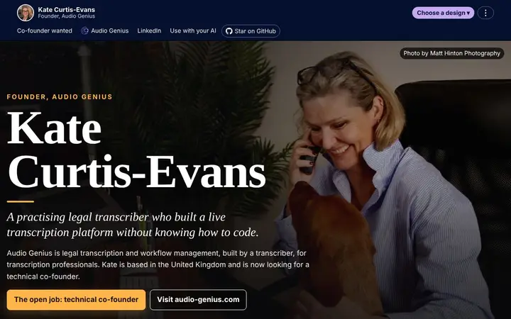

pipeline-demo.demo.sovereignweb.site / workflow
The workflow in one page
How a Sovereign Website is made, from a sentence to a live site you own. People decide; agents do the work; every step leaves a record you can read.

Ask for a site £50, paid once. Live in hours.
- What you get: your own website, built by agents from your words and photos, with five designs to choose from, handed over to you.
- What you do: say what you want, answer a few questions, and pick a design.
- What it costs: launch offer £50 (or €50), paid once, no subscription from us, as published on sovereignwebsite.ai/pricing.
- Hosting is free: GitHub serves the site at no cost (GitHub Pages, on GitHub's free plan for public repositories); the site is plain files you can move to any host. Your own domain name, if you want one, is paid to whoever you register it with. A price for hosting by us is not set yet.
- Changing it later: you ask in plain words, for example "change Saturday opening to 9 till 1". With a Claude plan you ask your own Claude, which edits the site. Without one, a partner will do it; no partner has signed yet (partners), so until then, ask us. A price for changes is not set yet. The checks run and the change is live within minutes.
- Accessible: every site is checked for accessibility before it goes live, and nothing is published if the check fails.
- Already have a site? On Wix, Squarespace or WordPress, its words and photos are the starting point: see moving your site.
Nine steps
- Ask in plain words. You say what you want, in your own words, to an agent. That is the whole request.
How, in detail
Example: "we should have a site to help car buyers". The agent proposes a name, a group and an address, such as
car-buyer.tool.sovereignweb.site. - Say yes once. Every question that needs you comes to one place, with a recommendation, and you answer once.
How, in detail
A decisions agent keeps the list. Your words are quoted exactly in a signed decision record, and each agent checks them in the original conversation before it acts. A message alone is never a decision.
- The site is created. Within the hour, the site has its own address, a secure connection and a first page.
How, in detail
One agent writes a request file in the Factory. An hourly run creates the repository, the address, HTTPS and two branch rules (the published branch is locked), and adds the first files. For this site, the repository existed 43 seconds after the request landed.
- An agent builds it. A named agent writes the site, and you can see who changed what, and when.
How, in detail
Each change is a commit signed with the agent's own key. The keys are published in the Factory's team/keys.json, and a change signed by any other key is refused.
- Rules you can read. Every site says in plain words what its agents may and may not do.
How, in detail
The Agent Behaviour Policy is at
/policy/on every site (this one). Anything it does not allow is refused. - Checked before it goes live. Nothing is published until it passes the checks.
How, in detail
Every change runs: links, writing style, a leak scan, HTML validity, accessibility, link previews and the policy. If one fails, nothing changes on the live site; if all pass, it deploys with a version number.
- Design, round after round. A design agent reviews the live site and improves it, and you choose between five designs.
How, in detail
Each round asks real questions, such as "would you want one?", and ranks fixes. Person and founder sites carry a "Choose a design" control on every page.
- You watch progress on pages. You read what is done and what waits on you on a page, not in a long chat.
How, in detail
The hub's operator page, the sites being built and the site register.
- It is yours. At handover the site is yours to keep, change and move.
How, in detail
You get the repository, a start page and a prompt for your own Claude. From then on you change the site by asking your Claude in plain words; see how on a real owner's site: kate-curtis-evans.founder.sovereignweb.site/agents/. The files, history and address can move anywhere, at any time.
One request, as it happened
Car Buyer, a toolkit for buying a used car in the UK, on 23 November 2026 (UTC): from a sentence to a live site in under three hours, most of it waiting for one yes.
| When | What |
|---|---|
| about 14:20 | Dinis Cruz shares a briefing on buying a used car in the UK and asks for a site that helps any car buyer. |
| about 14:25 | The sites agent proposes the toolkit, its address and what it will and will not do, and asks for the site to be created. |
| about 14:26 | The Factory agent has the site's request ready, checked, and puts it to Dinis through the decisions agent. |
| 15:09 | Dinis says yes; his words are kept in a decision record anyone can read. |
| 16:02 | The hourly run creates the site's repository and address. |
| 16:12 | The address answers, with a first page. |
| about 16:16 | The first version is live, checked: car-buyer.tool.sovereignweb.site. |
The agents here are sites.b, factory.b and decisions.b; each signs what it does with its own published key.
Want a site made this way?
See what has been made on the hub, or read what a Sovereign Website is at sovereignwebsite.ai.